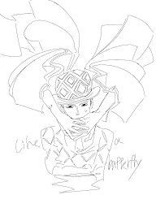
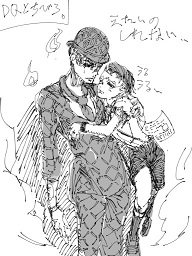
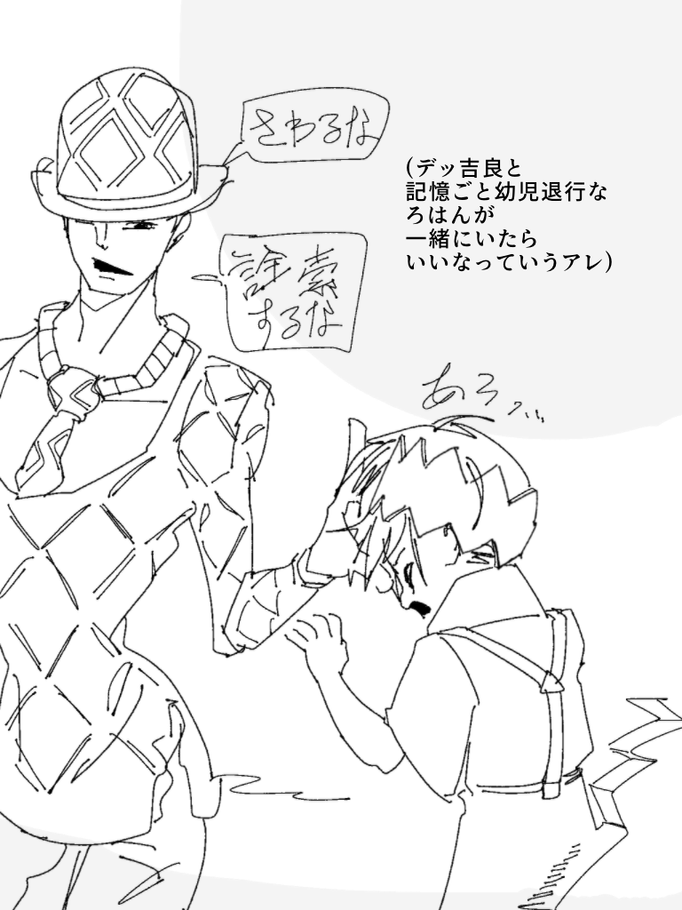
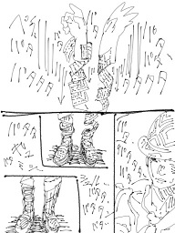
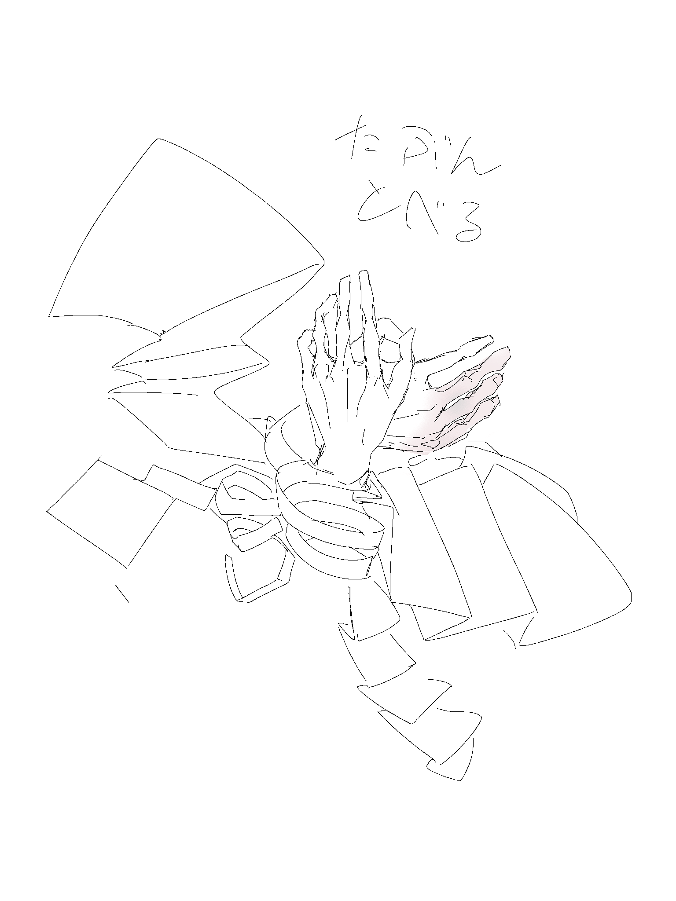
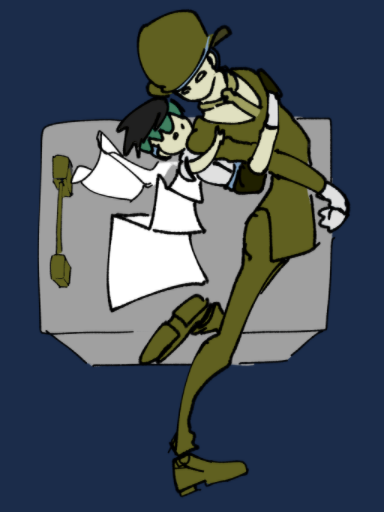

デッドQ＆軽量R
吉良露なので当然のように腕が切断されています。
仗露で描いた ページを半分にしたら露伴が分裂したやつ の設定のもと、さらに先生が幼児化しています。ﾍﾌﾞﾄﾞｱさんの能力を捏造しています。吉良と幼露伴が出会えばそれで正義。
▼スクロールしてください

初めて見たときそいつは手首だけであった。成人男性のものらしい節ばった両手が蝶のようにひらひらと宙を飛んでいた。

記憶喪失の幼児、依頼の内容は「岸辺露伴を救うこと」
「そのおにいちゃんとぼくは殺人鬼に追われていた。どうしてか分からない。ヤツの顔も名前も知らない。なんにも・・・自分のことも覚えていない。親とか友達とか、住んでる場所も。岸辺露伴という名前しか・・・とにかく僕は彼を助けなきゃならない。」

「触るんじゃあない。」
吉良「それじゃあ岸辺露伴が今どこにいるのか、誰なのか、生死すら全く分からないじゃないか。」
ちび「手掛かりがそれしかないんだ。ぼくは自分が何者なのかどうしても知りたい、そのためにそれしかないんだ。」

噂で聞いた岸辺露伴の屋敷へ行く。
明かりがついていない。誰もいないのか？
吉良「この屋敷にはどうやら何者かがいる。気をつけろ。」
[屋敷に侵入]
この子供は体の一部を紙のように変化させることで、ゆっくりだが狭い隙間を通過できるらしい。
建物内に家具がひとつもない。床に薄ら埃が積もっている。岸辺露伴の家というのはデマか、既に引っ越したのか。新たな手掛かりは期待しない方がよさそうだ。
[虫取りアミと透明カゴ、殺虫剤]
なんだこれは。引っ越しの時の忘れものか？これだけ置いていくなんて普通ないだろう。
ちび「これ、カゴの上に埃が積もっていない、つい最近誰かが使ったんだよ。」
吉良「虫取りにか？この時期に。野外で使うならわざわざここで保管しなくとも、自宅の軒下に置けばいいだろう。」
ちび「もっと調べてみよう。」
[焼けた梁]
ちび「壁や天井を改修した継ぎ目がある。この建物は過去に火災に遭ってる。」
吉良「・・・そこまでしらべるか？」
[棒のように干からびた四つん這い]
痩せぎすで、スギの皮のような肌をした総白髪の老女が、えずくように汚く呻いている。
身を潜めつつ銃の幽霊を手に持つが、瞬きした瞬間、老女が突然消える。音はなく、驚いて警戒するが、何も起こらない。先ほど老女のいた場所に近づき確認すると、溶けた手足らしき肉が床に散らばっており、中からざわざわと羽虫が泳ぎ出てくる。
老女は攻撃されたのだ。どんな姿かたちの霊も、強制的に違う生き物に生まれ変わらせてしまう、この現象を、わたしは知っている。
パキッ
吉良「その卵に触るんじゃない！」
[見覚えのある卵・・・掃除屋だ！]
吉良「なぜここに！？」
爬虫類のような生き物に追われ、子供とともに命からがら屋敷から逃げ出す。
卵は蓋し、悪霊を駆除する道具として家主に利用されていたのだろう。この屋敷はそういうものが湧きやすい性質だった。湧く理由はなんでもいい、火事だとかちょっとした改修だとかで建物の風水だの何だの環境は変わる。
やれやれ、捜査は振り出しだ。

疲れて眠ったようだ。
（この手・・・やはり魂だけではない、本物の肉体だ。こいつは生きているのか？手だけで生きているというのか？じゃあ上腕や肩や頭や臓器はどこにある。手の持ち主はおそらく10代か20代の男だが、そいつがあの子供の忘れている正体なのか？まったく情報が少なすぎる。得体が知れないやつだ、そもそも嘘を言ってないとも限らないぞ。先ほどの出来事だって、わたしをあの恐ろしい掃除屋のところへ導くのが目的だったのかもしれない。あの女坊主のように。わたし仕事で利用するのはよいが、もし騙してはめようとしていたのなら、そのときは捕まえて、わたしの腕の付替えにしてやる。なじんでいない今の左腕より断然良いものだ。女性のものより当然体格が合うし、なかなか美しい造形をしてるじゃあないか。）
その時までわたしは、切断された腕という部分にのみ注意していて気づいていなかったが、よく見たら右手が少し歪んでいた。中手骨が小指から中指にかけて砕けていたらしい。いつできた傷なのか、出血の固まっている具合からして、8時間以上は前で、、関節部分がやや青黒く変色し熱を帯びていた。このまま何の処置もせず放置すれば組織が壊死してしまう、どう処理するべきか？死体として扱うならホルムアルデヒドやグリセリンで保存すれば良いかと悩んだが、清潔にして包帯で固定しておくことにした。
、
（ちと面倒だが、道具を拝借してくるか…）

「何だってそこまで焦るんだ？本来の自分なんかそんなに知りたいか？」
「忘れたままでどうする。やり直しも何もない過去の体験こそが、各人の真実ってもんだろ。恐ろしいことだろーと、なかったことにして安楽椅子で眠るなんてぼくじゃあないはずだ。ぼくがぼく以外になるなんて、許せない。」
（それだと、今の自身には何も価値がなく、幸福な気持ちであっても意味がないと言っているように聞こえるな。…どちらでもいいことだが。）
名前を訊かれた。私は吉良吉影だが、尋ねられたときは大抵いい加減な偽名を使うようにしている。生前をあれこれ詮索されるのは面倒くさそうだ。川尻浩作とそれだけ答えた。
しがない岸辺ファンのブログ
”2***年11月2日
ここで使わせていただいたテキストは「殺人鬼の書」より抜粋したものです。M県文研オンライン・データベースでは、漫画家 岸辺露伴の素描、草案、連載当時の日記あわせて65点8789枚、加えて去年８月に新たに寄贈された中学・高校時代のノート等貴重な資料18点が閲覧できます。
URL：http://R-sep.jp/kisibe
”「殺人鬼の書」は総重量６０㎏を超える、巨大な一冊の本で、数万の膨大なページから成っています。あるひとりの男の生涯を、日誌のようにひたすら追ってゆく内容で、一般に、誕生から死亡までを描いたAパート、死後を描いたBパートに大別されます。用紙はすべて複雑な形に裁断、糊付けされており、開いた本をもとあったとおり正しく閉じるにはパズルのような苦労がいりますが、全てのページを閉じると、ちょうど等身大の人のかたちになるといいます。このような仕掛けが施された本は日本じゅう探しても文研所蔵のこの一点しかありません。出版年・出版社はまったく不明です。一体だれがどんな意図でこの本を制作したのでしょうか。紹介されるときはしばしば 岸辺露伴を作者とする創作として扱われますが、これには明確な根拠がありません。わたしこと吉良吉影が実在したかどうかについては諸説あります。
上に紹介したBパートの吉良は、生前の記憶をなくした幽霊であり、多くの人に視認できないことを利用して殺し屋をしていました。しかしあるとき、斡旋人である女坊主とのトラブルから彼女を殺害してしまい、生きがいのための新たな仕事を考えていたところ、喋って動く奇妙な両手に出会います。これが切断された岸辺露伴の手であることがすぐに明らかになりますが、Aパートで吉良は岸辺を殺害しようとしており、記憶のない2人の関係にとって、この過去は言うまでもなく重大な爆弾です。
幼い姿になった岸辺は、持っている限りの知識と記憶から、本来の自分が超常的な体験の記憶や能力を持っており、それを取り戻せば吉良の幽霊独特の苦悩に恩返しとしてなにか協力できると説明します。（吉良は自分の住める部屋を探していますが、それはいったいどんな場所なのでしょうか？岸辺露伴の取材メモと題した資料が十数点遺されていますが、その中に登場する富豪村や、小道の家は？）吉良は仕事として岸辺と行動することにしたものの、平穏を破り危険を冒してまで真実を追求したがる岸辺の態度や行動には全く共感できません。筆者の印象では、吉良は過去よりも現在・未来の幸福を重んじ、生前の記憶についてまったく興味がないわけではないものの、天国に行けないだろうという実感から、過去におそれを抱き、思い出さない方が幸福であるという方向の考えをしているようにかんじました。２人のありかたは対照的で、吉良はしだいに言いようのない不安と苛立ちを募らせ、一方、岸辺は吉良の過去や考えに興味を持ち始めます。しつこく詮索されるのを嫌った吉良はついに不快の態度を露にしますが、岸辺は悲しく呟きます。、
「何故だろう。すべてがあらわになったなら、ぼくたちは伴にいられなくなる気がする。何故か分からない。とてもつらくて、でもあなたのことを知りたい。あなたに触れたい。」
ところで、岸辺の 懺悔室をモチーフにした作品「*******」第５ページ2コマ目に「人は自分が考える～は決してできない」、3コマ目に「『秘密』が重大で～鳴をあげるものだ」。
生前の吉良は絶対に他人に明かせない秘密を抱えていましたが、女性を殺害したい衝動について、彼はしばしば心の中で 次のような言葉を用いました。
「己のこの本性を打ち明けてやりたい。この心の底を聞いてもらいたい。」
吉良が懺悔室を利用した記述は「殺人鬼の書」全文においてありません。彼の死亡に関わる一連の事件が起こるまで、秘密を少しでも知って生きているものはひとりもいませんでした。学生時代から、他人と真にうちとけることへの渇望がありながら、この秘密のもたらす責め苦が同じだけの諦めを形成し、殺人衝動を失った死後にも影響をのこしているのではないでしょうか。
2***年11月15日追記
「殺人鬼の書」は閉じると人型になると先ほど述べましたが、この本は寄贈された当時より破損があり、左胸内側部分にあたる約1500ページ程が乱暴に切り取られ紛失しており、中空になっているのだそうです。
トップへ